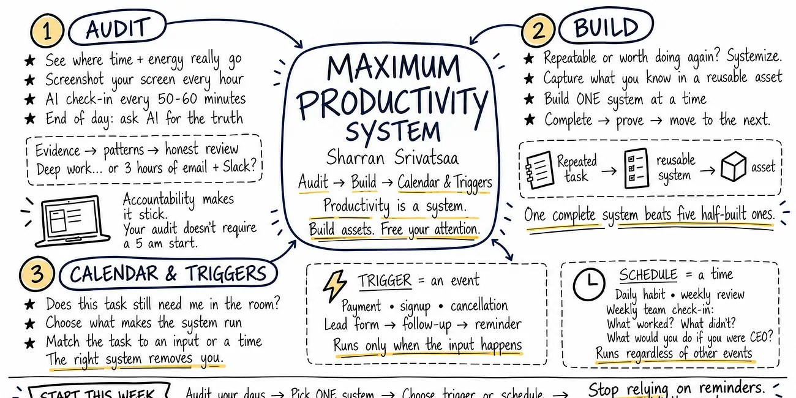
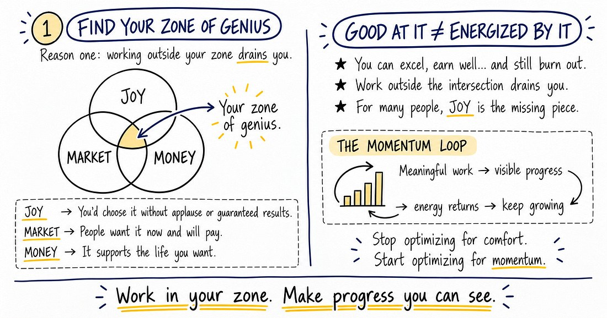

The advice that burns people out
Most productivity advice tells you the same three things. If it worked, business owners wouldn't be more burned out than ever.
Sharran would know. Building his first billion-dollar business with a newborn at home, he wasn't burning the candle at both ends — in his words, he'd doused the thing in gasoline and set the whole wick on fire. Asleep at the laptop at 3 AM, up for a 7 AM meeting, and his wife watching it all play out. His doctor's prescription, after a few weeks of tracking, wasn't medication. It was: wake up earlier. Every time he did, his numbers improved across the board.
He knew he'd never hold a 5 AM wake-up without stakes. So he asked three friends to jump on a call with him at 5 AM for one week. They invited others.
That's the 5 AM Club — seven days a week, 365 days a year, for over a decade, with two or three thousand people live every morning. Accountability is what made it stick. And that was the first lesson of the system.
Productivity is a system. Not 16-hour days and ruined health.

1Audit
You can't fix what you can't see. Most people think their day is deep work; the audit usually shows three hours of email and Slack. You don't need a 5 AM start to run one — you need evidence. Here's the version you can do today.
1Screenshot every hour
Take a screenshot of your screen once an hour. It's proof of what you were actually doing at work — not what you remember doing.
2AI check-in every 50–60 min
Have an AI ask you what you're actually doing right now. It keeps you accountable to the hour you're in.
3End of day: ask for the truth
Hand the screenshots and check-ins to AI and ask it to pull it together and tell you the truth — not the version you wanted to hear.
2Build
Once the audit shows where the time goes, ask two questions about each task: Is it repeatable? Is it worth doing more than once? If the answer is yes to either, build a system for it. Every repeated task is either burning cognitive capacity or building an asset — and the way you convert one into the other is by capturing what you know into something reusable.
This only happens if you actually sit down and build a system, one at a time, instead of staring at the whole list with analysis paralysis.
One system built properly is worth five half-built systems you will never use.
Then, once a system works, ask one more question…
Does this task still need me in the room?
If the answer is no, there are two ways to get yourself out of it.
3Calendar & Triggers
Two types of system get you out of the room. One runs because something happened. The other runs because it's time. Picking the right one is the whole game.
Trigger
- A lead fills out a form
- → an automation sends the follow-up
- → a reminder goes out automatically
Schedule
- At home: his 14-year-old's one chore is Sunday trash. The weekly reminder was becoming a part-time job, so it became a 20-second Sunday check-in:
- Did I remember?
- Did I do it well?
- Did I have a good attitude?
- At work: the same system across the company, three questions reworded:
- What worked?
- What didn't?
- What would you do if you were CEO?
Where this shows up in the work
Audit your selling day
Run the hourly screenshot for one week. Most reps will find the “deep work” was CRM cleanup and email. The number that matters is hours in front of customers — now you know yours.
Build one system, not six
The proposal you rebuild every time, the site-walk checklist, the kickoff email — pick the one you repeat most, finish it properly, and prove it in a live deal before you touch the next.
Triggers live in Engage
Proposal sent → three-day follow-up. Stage change → the next task appears. If it only matters when the customer does something, don't put it on a calendar — wire it to the event.
The Friday pipeline review
What worked, what didn't, what would you do if you ran the office? Same slot every week, regardless of the week. That's a calendar system — and it's where the next system to build shows up.
Start this week
Sharran's three moves, in order. Name them here — it stays on your device.
Audit a day with AI
Screenshot every hour, check in every 50–60 minutes, and ask for the truth at the end. Which day?
Pick ONE system to build
At the end of the week, use the audit to find the daily task that could be a system. Make a task for next week to build just one.
Trigger or schedule?
Ask: does this task still need me in the room? Then choose how it runs without you.
Stays on this device. Come back next Friday — it'll ask whether the system got built.

Burnout Is A Skill Issue
Before you systemize the work, make sure it's the right work. Find your zone of genius, keep your hardware and software running, and stop optimizing for comfort.